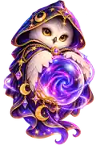
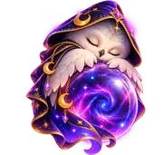

Сова-предсказательница 🔮
Три предсказания в день. Новые появятся после полуночи.


Предсказание совы
Шар уже проснулся. Осталось его спросить ✨
Три предсказания в день. Новые появятся после полуночи.


Шар уже проснулся. Осталось его спросить ✨